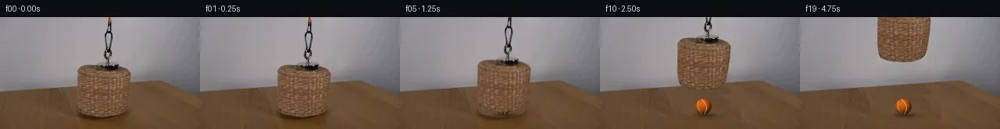

![首帧]()

Round 00
2026-11-05T18:07:03.844040+00:00像素候选变化代码 +198/−0inspection 更新
pixels 29daba6647b58b43 · code bc4b4fca13bc0c69
查看本轮 generate.py 真实 diff
--- previous/generate.py
+++ current/generate.py
@@ -0,0 +1,198 @@
+"""Source-texture compositing with local plate reconstruction and analytic ball shading."""
+from pathlib import Path
+import json
+import numpy as np
+from PIL import Image, ImageDraw
+from scipy.ndimage import gaussian_filter, maximum_filter, map_coordinates
+from artifact_io import save
+
+ROOT = Path(__file__).resolve().parent
+W, H, SS = 256, 144, 4
+original = np.asarray(Image.open(ROOT/'first_frame.png').convert('RGB'))
+src = original.astype(np.float64)
+yy, xx = np.mgrid[:H,:W].astype(np.float64)
+
+def raster_polygon(points):
+ m = Image.new('L', (W*SS,H*SS))
+ d = ImageDraw.Draw(m)
+ d.polygon([(round(x*SS),round(y*SS)) for x,y in points], fill=255)
+ return np.asarray(m.resize((W,H),Image.Resampling.LANCZOS),dtype=float)/255
+
+# Silhouette follows measured source weave and excludes the cast shadow.
+outline = [(119,60.7),(108,62),(103,63.8),(100.2,66.4),(98.8,69),
+ (99,83),(99,106),(100.6,117),(103.5,122.5),(110,125.3),
+ (119,127.1),(132,128),(144.5,127.1),(154.8,123.8),
+ (159.6,119.6),(162.4,112),(164.6,99),(166.5,85),
+ (167.3,73),(165.4,68.9),(160,65.9),(154,63.4),
+ (148,61.8),(138,61),(129,60.8)]
+basket = raster_polygon(outline)
+magnet = Image.new('L',(W*SS,H*SS))
+ImageDraw.Draw(magnet).ellipse((122*SS,57.1*SS,152.4*SS,63.7*SS),fill=255)
+magnet = np.asarray(magnet.resize((W,H),Image.Resampling.LANCZOS),dtype=float)/255
+basket = np.maximum(basket,magnet)
+
+# Source-derived wall, interpolated on each row between clear side strips.
+edge = 96.0 - .072*xx
+plate = src.copy()
+for y in range(H):
+ for x in range(94,173):
+ # For rows adjacent to the tabletop, use donors at the same distance
+ # above its sloping back edge. Other wall rows use same-row donors.
+ blend = np.clip((y-74)/10,0,1)
+ yl = np.clip(y + blend*.072*(x-91),0,H-1)
+ yr = np.clip(y + blend*.072*(x-178),0,H-1)
+ l = np.array([map_coordinates(src[:,:,c],[[yl],[91]],order=1)[0] for c in range(3)])
+ r = np.array([map_coordinates(src[:,:,c],[[yr],[178]],order=1)[0] for c in range(3)])
+ t = np.clip((x-91)/87,0,1)
+ plate[y,x] = l*(1-t)+r*t
+
+# Smooth color field of actual visible wood, plus copied, color-corrected
+# source wood residuals. No external inpainting or generated textures.
+wood_valid = (yy > edge+2) & ((xx<89)|(xx>182)) & (yy>89)
+features = np.stack([np.ones_like(xx),xx/256,yy/144,(xx/256)**2,
+ (yy/144)**2,xx*yy/(256*144)],axis=-1)
+coef = np.linalg.lstsq(features[wood_valid],src[wood_valid],rcond=None)[0]
+wood_field = features@coef
+for y in range(80,H):
+ for x in range(89,182):
+ donor_y = min(H-1,y+14) if y<100 else y
+ left_x = x-76
+ right_x = min(255,x+67)
+ weight = np.clip((x-89)/93,0,1)
+ # Both donors are on clear table, including when revealing the back edge.
+ residual_l = src[donor_y,left_x]-wood_field[donor_y,left_x]
+ residual_r = src[donor_y,right_x]-wood_field[donor_y,right_x]
+ wood = wood_field[y,x] + (1-weight)*residual_l + weight*residual_r
+ a = np.clip(y-(96-.072*x)+.25,0,1)
+ plate[y,x] = (1-a)*plate[y,x]+a*wood
+
+# The thin irregular connector and orange cord are masked by source contrast.
+cord_roi = (xx>=130)&(xx<=147)&(yy<=58)
+contrast = np.max(np.abs(src-plate),axis=2)
+chain = np.clip((contrast-2)/35,0,1)*cord_roi
+# Remove tiny background variation but retain antialiased thread/link pixels.
+chain[contrast<4] = 0
+assembly = np.maximum(basket,chain)
+assembly[assembly<.01]=0
+
+# Local removal region: original assembly and its soft tabletop shadow.
+remove = gaussian_filter(maximum_filter(assembly,size=5),.65)
+remove = np.clip(remove*1.3,0,1)
+shadow_zone = np.exp(-.5*(((xx-133)/30)**2+((yy-130)/10)**2))
+shadow_zone *= (yy>=110)&(xx>=88)&(xx<=180)
+shadow_clean = np.clip(shadow_zone*2.6,0,1)
+remove = np.maximum(remove,shadow_clean)
+clean = src*(1-remove[:,:,None])+plate*remove[:,:,None]
+# Preserve the measured shadow colors and falloff separately. Exclude weave.
+source_shadow = np.minimum(src-clean,0)*(1-maximum_filter(basket,size=3))[:,:,None]
… diff truncated; 111 more lines …